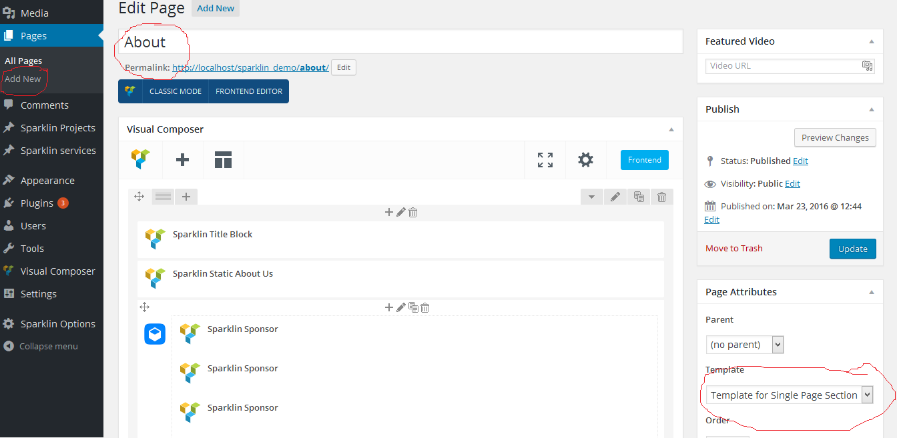
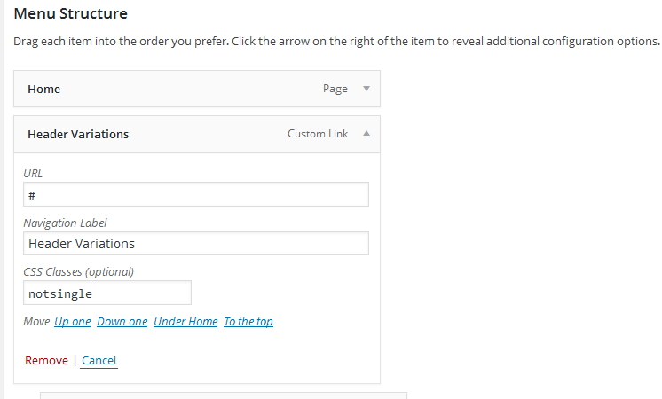

By - PranonTheme
Wander has 4 menus, Primary Menu, Responsive Menu, Footer Menu and Onepage Menu.
In case of multiplae page site, include menu items and select Primary Menu from Theme Location.
In case of multiplae page site, include menu items and select Primary Menu from Theme Location.
In case of single page, we should use Onepage Menu as main navigation.
As for example, you want to have a section named About in you single page, (Click on nemu item About and you want to go down to About section.)
In that case create a page named About selecting the page template Template For Single Page Section.
Then go to menu section from admin panel.
If you like to have a menu item that will redirect you another page instead of scrolling down, use a class named notsingle to that menu item as follows.
This is only needed when you use onepage menu.
Wander them's footer contains a menu at the footer. Use footer Menu from Theme Location for footer menu